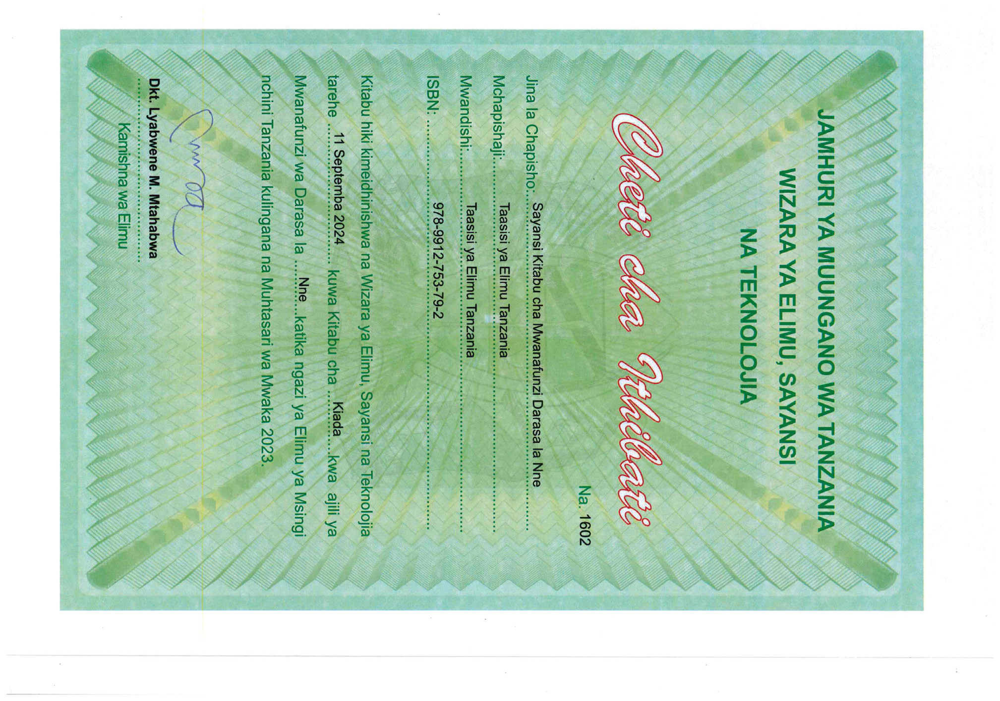

Sayansi
Kitabu cha Mwanafunzi
Darasa la Nne

Maelezo ya picha: Cheti cha ithibati cha kitabu cha Sayansi cha mwanafunzi wa Darasa la Nne kutoka Wizara ya Elimu, Sayansi na Teknolojia. Kinaonyesha jina la kitabu, Taasisi ya Elimu Tanzania, tarehe ya idhini, na saini ya kamishna wa elimu.JAMHURI YA MUUNGANO WA TANZANIA
WIZARA YA ELIMU, SAYANSI
NA TEKNOLOJIA
Cheti cha Ithibati
Na. 1602
Jina la Chapisho: Sayansi Kitabu cha Mwanafunzi Darasa la Nne
Mchapishaji: Taasisi ya Elimu Tanzania
Mwandishi: Taasisi ya Elimu Tanzania
ISBN: 978-9912-753-79-2
Kitabu hiki kimeidhinishwa na Wizara ya Elimu, Sayansi na Teknolojia
tarehe 11 Septemba 2024 kuwa Kitabu cha Kiada kwa ajili ya
Mwanafunzi wa Darasa la Nne katika ngazi ya Elimu ya Msingi
nchini Tanzania kulingana na Muhtasari wa Mwaka 2023.
Dkt. Lyabwene M. Mtabawa
Kamishna wa Elimu
Taasisi ya Elimu Tanzania